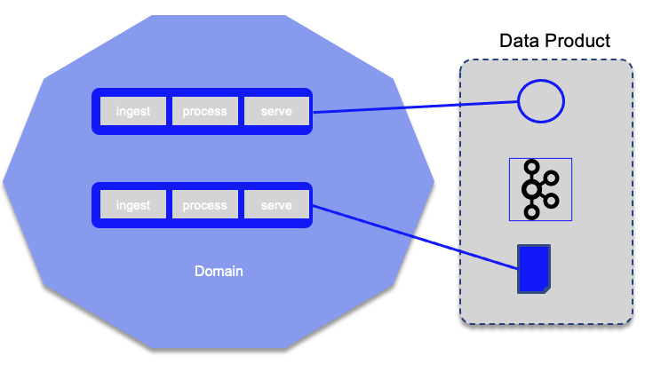

Data studies
There is perhaps nothing more valuable to an organization than its data. In the age of digital transformation and the empowered customer, organizations must be able to generate real-time insights based on accurate and high-quality data.
I try to regroup a set of studies and analysis under the data file.
Important concepts
Data topology
A data topology is an approach for classifying and managing real-world data scenarios. See separate note.
Data gravity
The continual expansion has given rise to the phenomenon known as data gravity: the ability of bodies of data to attract applications, services, and other data. Leverage data where it is.
Requirements and context
- Get data more accessible: data is distributed between apps, data repository, data center, in the cloud, at the edges.
- Hybrid cloud deployment introduces complexities, where analytic workload is in dedicated environment instead to close to the data.
- Extensive copying and transfer of data creates the potential for performance, security, governance, and quality issues.
- Data lake is a gravity force, it attracts because of the diversity of the data and the size of data set.
- IT spends too much time and effort readying their data for analytic and AI work. Moving massive datasets into analytic clusters is an ineffective — not to mention expensive — process.
- Cloud technology has allowed for massive expansion of data bodies, which has served to increase data gravity rather than diffuse it. Or it allows scalable processing close to the data too.
- Data should be the first job to digital business transformation
- Strategy based on developing new and improved products and services based on data and analytics
- Organizations have big plans for data, analytics, and AI, and real-time insights: input data is processed within milliseconds so that it is available virtually immediately for use in business and operational processes.
-
Preparing data for analytics and AI is challenging:
- Latency (time from which a transaction occurs to the time when the data is available for query) is a major challenge: getting insights where and when they are needed
- Preparation: Keeping data secure and of high quality: concerns around data transfer and data governance.
- Automation: Still a lot of manual steps when integrating data for analytics and AI: difficulty integrating data from multiple sources is the number one technical challenge
- Ethical and regulatory issues keep them from deploying AI models into production
Recommendations:
- Analytics and insights are best done where the data lies: Example is to implement real time analytics in data streams.
- Hybrid cloud initiatives require a data gravity strategy
- With data gravity strategy you minimize data movement and remote processing, so reducing the security risk.
- Data gravity has to be taken into account any time the data needs to be migrated
- Consider data virtualization technology.
- Push AI/ML scoring to the transactional processing platform. Leveraging ML algorithms and models at source systems can help with aggregation, summarization, integration, and transformation for data to support quicker analysis.
Data topology is a good methodology to identify data source and semantics, consumer and producer of the data. It does not directly enforces Data Gravity.
Sources:
Data Mesh
Data mesh is an architecture style based on 4 principles:
- Domain-oriented decentralization of data ownership and architecture
- Domain-oriented data served as a product
- Self-serve data infrastructure as a platform to enable autonomous, domain-oriented data teams
- Federated governance to enable ecosystems and interoperability
The implementation of this architecture style is using tools but also demands organizational restructure, by adding a data product role for each domain with the goal to own and share their analytical data as products.
This is a paradigm shift from data lake, data warehouse with BI. The 3nd generation of data platforms is based on the Kappa architecture pattern, using real-time data processing, leveraging cloud based storage like S3 or COS. For enterprise with rich domains, a lot of sources and consumers, centralized data plaform leads to adoption and usage failures.
So consider how big is the domain, and how is the growth of data sources within the bounded context. Ingest and store data in one place, inhibit easy addition of new data source.
Big data platform inhibits the test and learn innovation cycle. But siloed domain oriented data is not the solution neither.
With the ingest-process-serve way of organizing data pipeline some architectures are based on team capacity and skill.
The data team has no business knowledge of the source team and the consumers team. They process feature requests after requests.
Data mesh proposes to address those issues by converging the four principles started in the DDD.
As of now the closest application of DDD in data platform architecture is for source operational systems to emit their 'business domain events' and for monolithic data platform to ingest them.
In fact we should do better and adopt the following:
- domains need to host and serve their domain datasets in an easily consumable way. Content and Ownership stays within the domain generating them. This implies that we may duplicate data in different domains as we transform them into a shape that is suitable for that particular domain
- Shift from ETL push and ingest model to
event streamsof serving and pull model. - The architecture quantum is the domain and not the pipeline stage.
- The source domain datasets represent the facts and reality of the business: "account Opened", "user click streams" are facts,
which are considered as
truths of the business domains. - Domain event are stored and served in append logs with time-stamped immutable records.
- Source data domains should also provides business aggregates, easy to consume: "account opened per month" for example is in the account domain.
- New data domains can ve created by joining and correlating data from other domains.
- Physical system datasets are differents and separated from the domain datasets. Domain datasets are larger in volume, records are timed, and change less frequently than source system.
- Some domains align closely with the consumption. They have different nature than the source ones: they transform the source domain events to aggregate views and structures that fit a particular access model.
- Data pipeline, cleansing, preparing, aggregating and serving data remains needed, but they stay within the domain.
- To address accesibility, usability and harmonization of the ditributed dataset, a
product thinkingapproach is important, (same approach as API product). The data assets is a product and the data scientists and data engineers are the customers.

- To be discoverable we need a data catalog with metadata such as ownership, source of origin, structure, samples,... so each data product needs to register to the catalog.
- Addressable with a unique address per storage formats.
- Provides a service level objective around data truthfulness. Providing data provenance and data lineage as the metadata associated with each data product helps consumers gain further confidence in the data product.
- Inter-operable: The key for an effective correlation of data across domains is following certain standards and harmonization rules.
- Secure access to datasets is applied at the time of access to each data product
- Common data infrastructure as a self serving platform is needed combined with global governance to ensure interoperability.
#### Sources